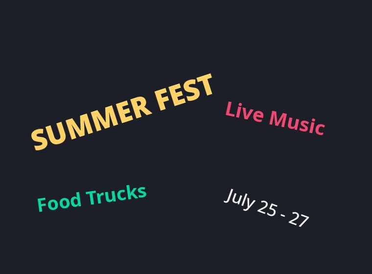

A text detector doesn't read words — it finds where they are. This
PaddleOCR DBNet model turns a photo into a per-pixel "is this text?" probability
map, then decodes that map into oriented boxes around every text
region — a receipt's line items, a shop sign, angled poster type. It runs entirely on your
device via ONNX Runtime Web; the image and the boxes never leave the tab. Detection locates
text; reading it is a separate step (see the multi-model demo).
object-detection (text-region detection) — run via raw ONNX Runtime Web (see note below)
Runtime
onnxruntime-web 1.21 (transformers.js has no DBNet text-detection class)
Input
[1, 3, H, W] NCHW — the image resized so H,W are multiples of 32, ImageNet-normalised
Output
[1, 1, H, W] — a per-pixel text-probability map; decoded (threshold → connected components → min-area box) into region polygons
Quantization
fp32 ONNX
Backend
WebAssembly (runs anywhere; no WebGPU needed)
Download
~2.4 MB, cached after first load
License
Apache-2.0 (ONNX export) · PaddleOCR (Apache-2.0)
Web APIs
WebAssembly, Web Workers, OffscreenCanvas, Canvas — all Baseline widely available
Run it
Pick a sample (or drop your own image), then detect. The model returns oriented
boxes around every text region — it does not read the words.

Drop / choose your own image
–text regions found
backend –inference –+ decode –input –
Everything runs on your device — the image, the probability map, and the
boxes never leave the tab. The samples are generated for this demo (no real people or brands).
See inside
The model's real output isn't boxes — it's a probability map: one number per
pixel for "how likely is this text?". Brighter = more confident. All the boxes above are decoded
from this map: threshold it, group connected bright pixels into regions, then fit a minimum-area
(possibly rotated) rectangle to each. That's the whole DB decode, made visible.
Detect an image to see its probability map.
Text-probability map (model output)
Decoded regions
Why it matters
Detection is the first stage of every OCR and document pipeline — and doing it on-device means a
sensitive document (a receipt, an ID, a form) never has to be uploaded to find its text. Once you
know where text is, you can act on regions without reading a word:
Private redaction — black out every text region on a screenshot or scan before you share it, all client-side.
Crop-then-read — feed only the tight text crops to an OCR model (TrOCR) so it recognises cleaner, aligned lines and skips the background.
Layout & counting — count text blocks, find the densest region, or check "does this photo contain text?" without a server.
Assistive capture — highlight text in a live camera frame so a low-vision user can tap the block they want read aloud.
This detector locates text regions; it does not recognise characters, languages, or reading order — pair it with an OCR model for that.
transformers.js has no DBNet text-detection class, so we run the ONNX graph directly with ONNX
Runtime Web. The model gives a probability map; the "DB decode" turns it into boxes:
import * as ort from "onnxruntime-web";
const session = await ort.InferenceSession.create(dbnetBytes, { executionProviders: ["wasm"] });
// image → [1,3,H,W] NCHW (H,W multiples of 32), ImageNet-normalised
const input = new ort.Tensor("float32", normalize(image), [1, 3, H, W]);
const { [session.outputNames[0]]: prob } = await session.run({ [session.inputNames[0]]: input });
// DB decode: threshold the probability map → connected components → min-area box per region
const regions = decode(prob.data, W, H, /*thresh*/ 0.3, /*boxThresh*/ 0.5);
Inference and the whole decode run in a Web Worker so the UI never blocks, and the 2.4 MB model
is fetched through Cache Storage, so a returning visit auto-initialises with no re-download.